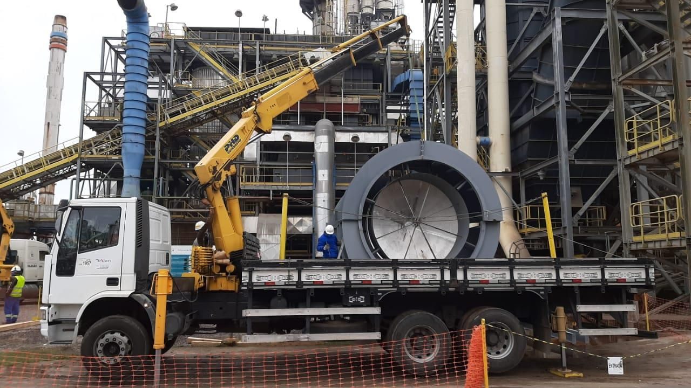

Seis disciplinas,
uma equipe
Do projeto executivo ao start-up: manutenção preventiva, preditiva e corretiva, contratos de longo prazo e paradas programadas.

Elétrica
Subestações até 230 kV, painéis QGBT e CCM, lançamento de cabos AT/MT/BT, SPDA, termografia e Hipot até 120 kV.

Instrumentação e automação
Instrumentos, válvulas de controle, analisadores, SDCD e CLP, fibra óptica, loop test e start-up.

Mecânica e caldeiraria
Pré-fabricação e montagem de tubulações, equipamentos estáticos e rotativos, soldas em aço carbono, inox, alumínio e cobre.

Construção civil
Fundações, concretos especiais, steel deck, revestimentos antiácidos e fireproofing, recuperações estruturais.

Estrutura metálica
Fabricação, jato, pintura e montagem de pipe-racks, escadas, plataformas e estruturas para pontes rolantes. NR-12.

Materiais e equipamentos
Fornecimento turn-key de materiais, painéis, transformadores, andaimes, plataformas elevatórias, munck e guindaste.